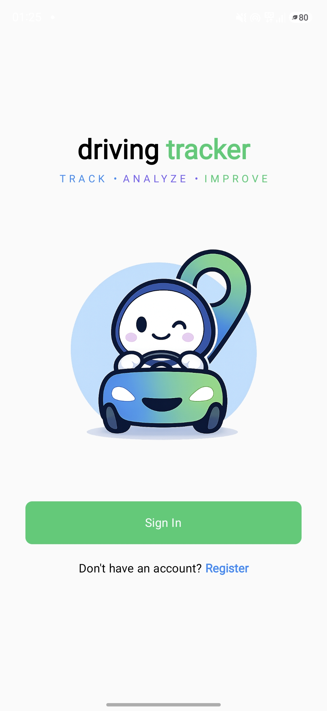
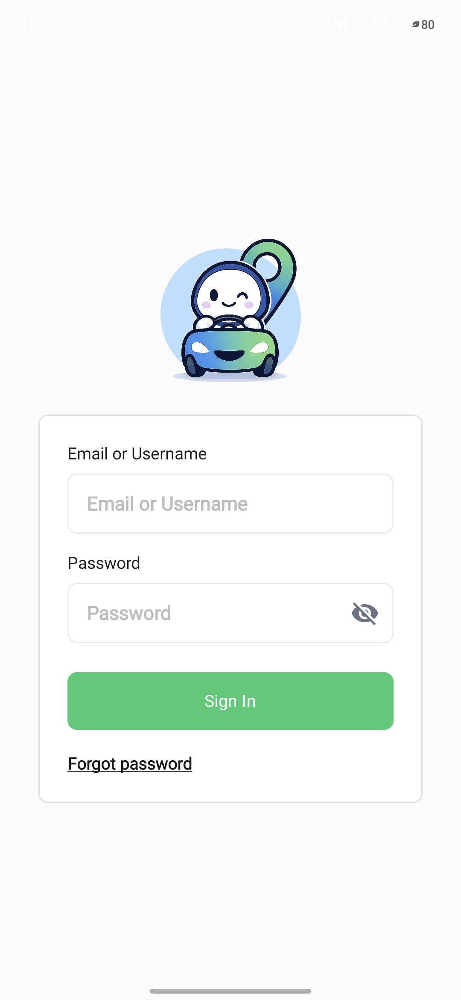
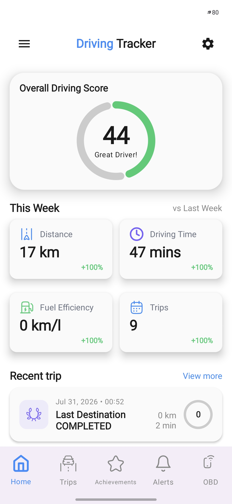
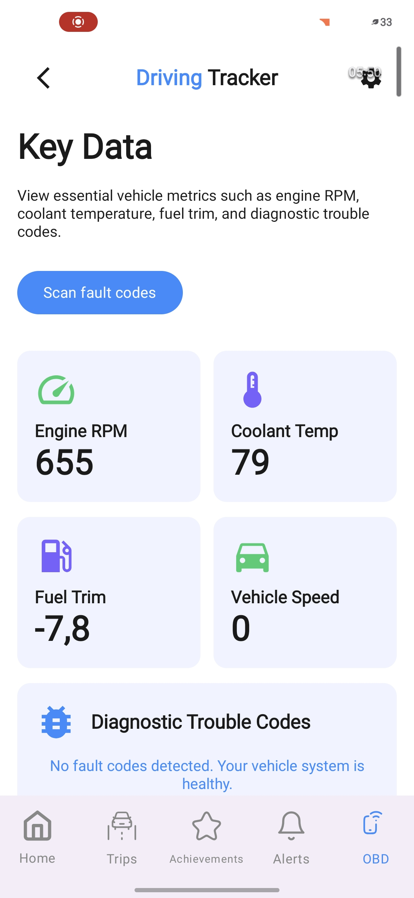
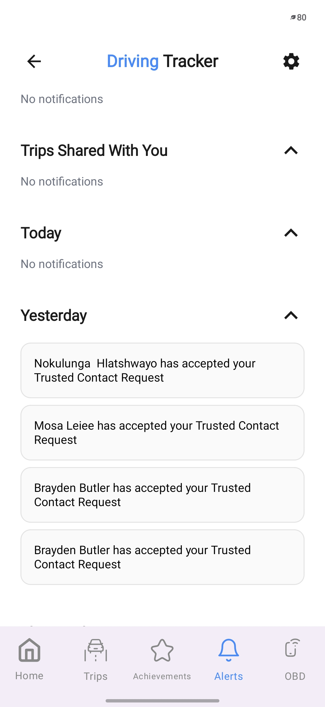
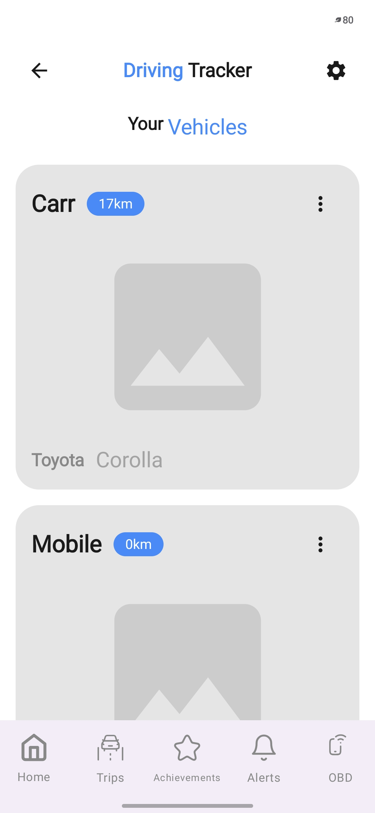
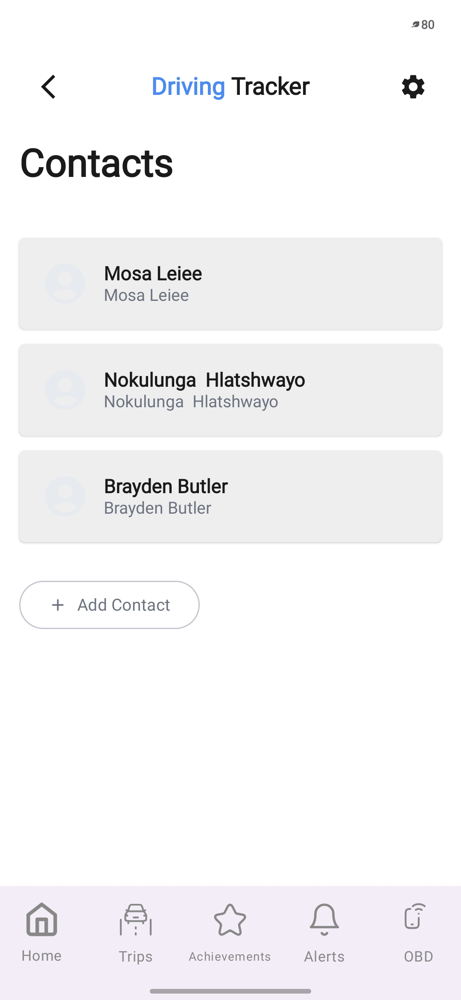
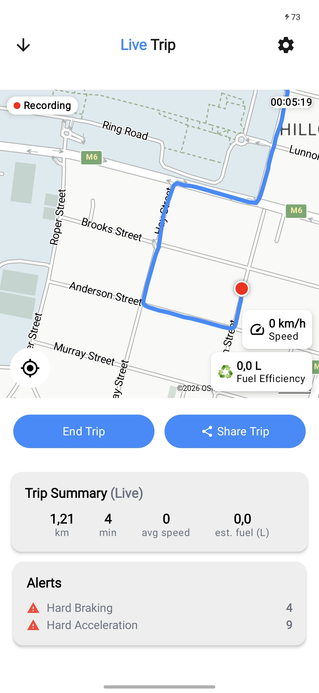

Driving Tracker
Brand Style Guide
A clean, safety-first visual system built around readable metrics, calm surfaces, and bright accents for interaction and performance feedback.
Driving tracker is a mobile based system designed to monitor and improve driving behaviour by combining smartphone sensor data, GPS tracking, and vehicle diagnostics from an OBD device. The app records trips in real time, analysing factors such as speed, acceleration, braking, and route patterns to generate insights on safety and fuel efficiency. It assigns drivers scores based on their behaviour, provides feedback and recommendations for safer and more efficient driving, and can trigger alerts for risky events or unusual situations. In addition, it includes social and gamification features like leaderboards and comparisons, and supports a web-based fleet dashboard where multiple vehicles can be tracked, analysed, and managed centrally
Colors
From Color.kt (tokens used across the UI)
Usage: Blue for navigation & links, Green for score rings, Purple for secondary accents and some badges. Accessibility: ensure text on tinted backgrounds meets contast expectations.
Typography
Matches Type.kt scale (Material 3)
Text color rules
Keep hierarchy clear and accessible.
Logo & Iconography
Usage rules
Using the logo as the primary brand marker. Keeping it clear, readable, and consistent across screens and print.
Accessibility: icons must have meaningful alt text.
Components
Standard component styling (buttons, cards, navigation)
Buttons
Primary actions use Blue/Green filled buttons. Secondary actions use White filled buttons with blue outline
Matches the auth screens: filled green for main CTA.
Cards + Score Motif
Cards use CardWhite rounded corners, and gentle elevation. Score rings use Green.
Real UI references (Screenshots)
Shows buttons, navigation, cards, and logo as they appear in-app








Style Guide Updates
Key differences from the first style guide
- Beyond Static Print: The guide is not just a static PDF anymore, it is now a web-native HTML reference.
- Tailwind CSS: The guide is now styled with Tailwind CSS insteadof standard CSS.
- Expanded UI Screenshots: The UI reference grid has doubled from four to eight application screenshots with data that is not mocked.
- Revised Component Guidelines: Primary buttons now include Blue/Green filled options (introducing an "End Trip" blue button), while secondary actions specify White filled buttons with a blue outline.
- Structure: The bottom footer has been removed, header badge text was shortened, and the color summary has been reordered to "Blue/Purple/Green" to match the tagline on the app and landing page.
- Background: Blue and white gradient in the beginning instead of plain white.